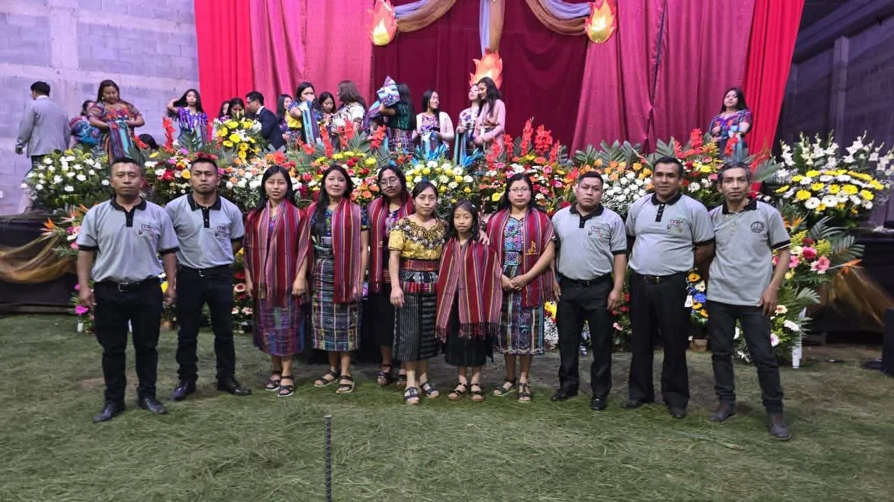
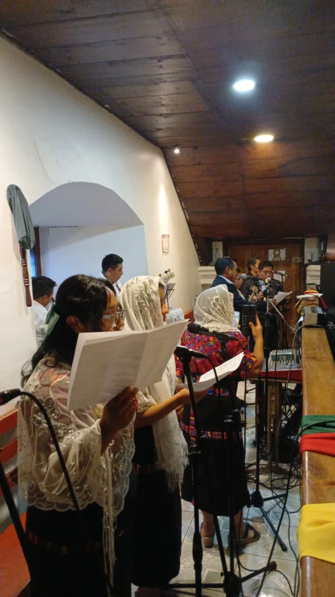
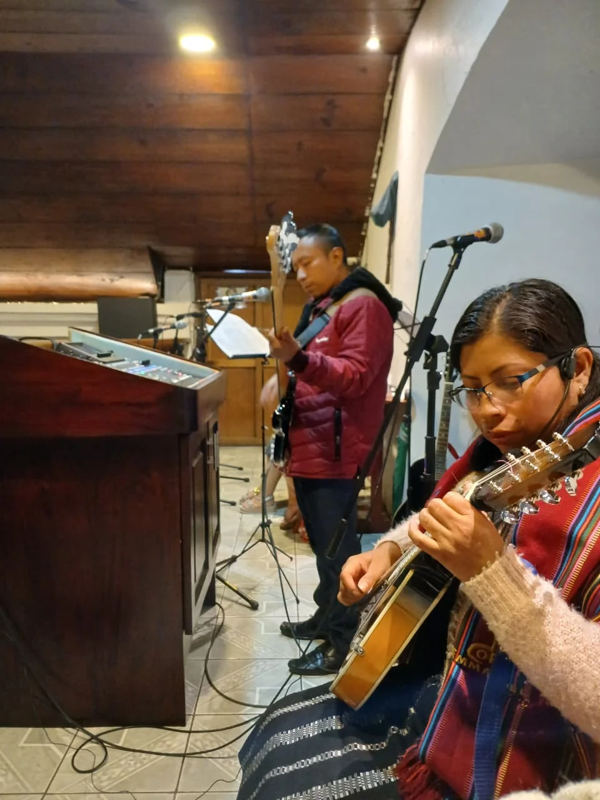
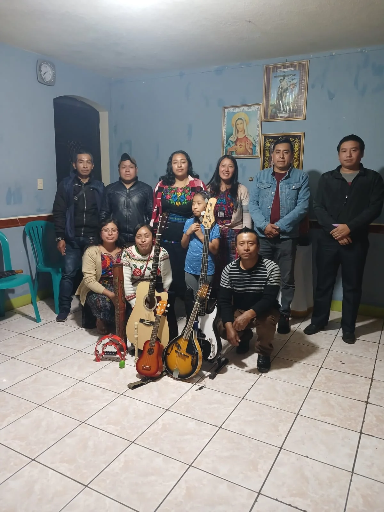
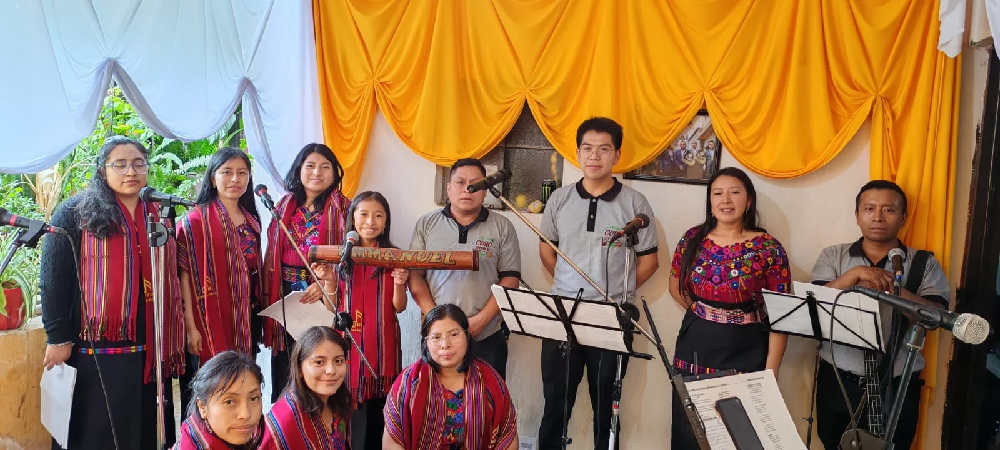
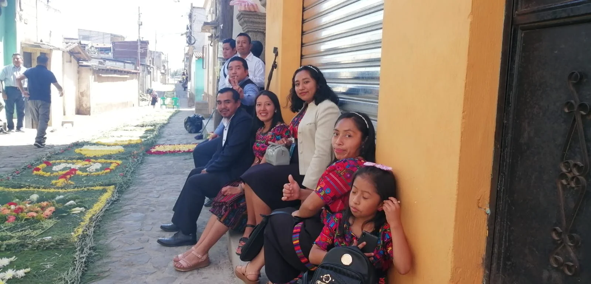
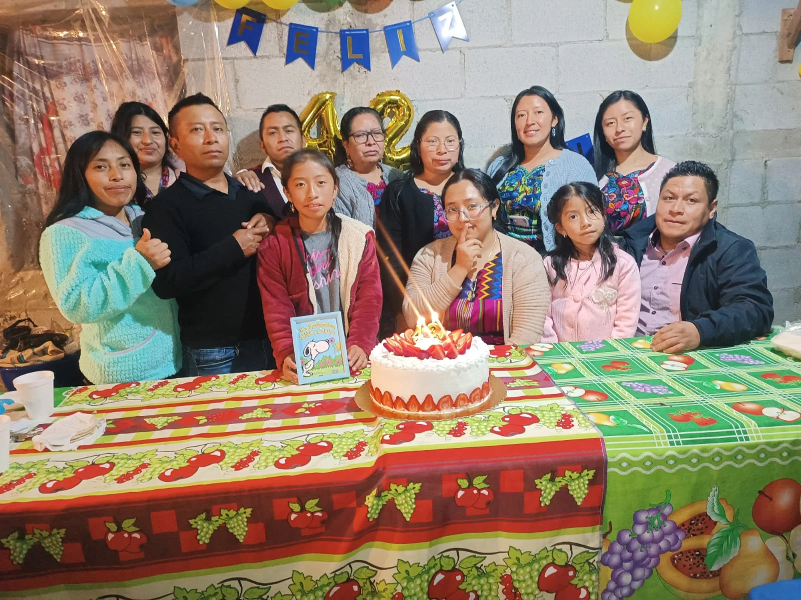

Alabar
Participamos en los servicios y celebraciones de la iglesia, poniendo la voz al servicio de la adoración.
Emmanuel es un coro de nuestra iglesia: un grupo de personas dispuestas a servir descubrió que la voz y la música, también es una forma de servir. No buscamos perfección técnica, buscamos corazones dispuestos a alabar juntos.
Ensayamos, aprendemos, nos equivocamos y volvemos a intentarlo — y en el camino se han formado amistades que van mucho más allá de la música.
Nuestro propósito es simple: usar el canto y la música para acercar a más jóvenes a Dios y unos a otros.
"Cantad a Dios, cantad; cantad a nuestro Rey, cantad."
Salmo 47:6"Si conociéramos el valor de la Santa Misa, ¡qué gran esfuerzo haríamos por asistir a ella!"
San Juan María Vianney"El coro no canta para ser escuchado, sino para que Dios sea alabado."
Saber, que forman parte de la asamblea de los fieles y realizan una función particular. Sacrosanctum concilium 23.
Participamos en los servicios y celebraciones de la iglesia, poniendo la voz al servicio de la adoración.
Ensayamos cada semana: técnica vocal, armonía, y sobre todo, crecer en comunidad.
Acompañamos eventos especiales, visitas y actividades donde la música puede llevar un mensaje de esperanza.
Creemos que cantar es un don para compartir, no para guardar. Aquí caben voces de todos los niveles.
Así vivimos los ensayos y presentaciones.







Así suena Emmanuel en cada tiempo del año litúrgico.
No necesitas experiencia previa, solo ganas de alabar y aprender. Todos empezamos en algún punto.
Escríbenos y te contamos cómo es tu primer ensayo.
Haz clic en los siguientes botones para dirijirte a nuestras redes:
Escríbenos por WhatsApp - tel. No. 1 Escríbenos por WhatsApp - tel. No. 2
Síguenos en Facebook
Escríbenos por WhatsApp - tel. No. 2
Síguenos en Facebook